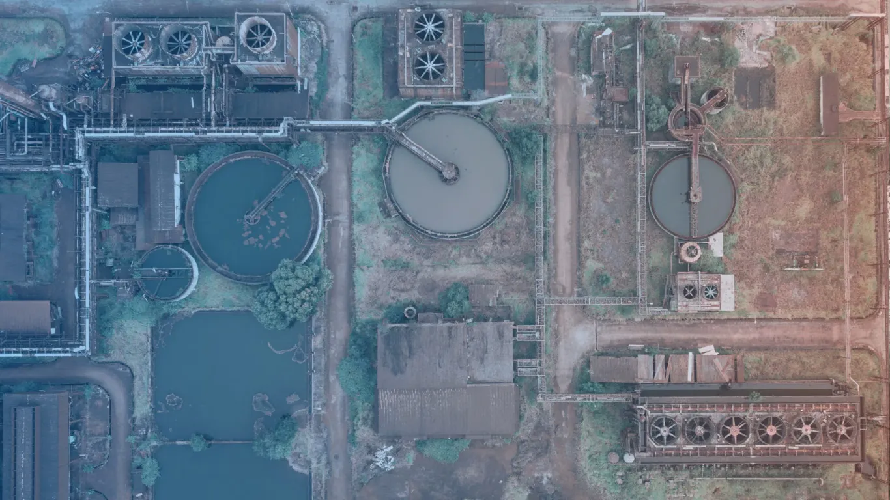

Project Aims to Support Pollution Control and Sustainable River Management in the Godavari Basin

July 12, 2025 – CS TECH Ai (Ceinsys Tech Limited) has received a Letter of Intent from the Nashik Municipal Corporation for providing Project Management Consultancy (PMC) services for the improvement of the sewage management system in Nashik. The project is aimed at preventing pollution in the Godavari River and is valued at approximately ₹5.81 crore.
The initiative will be executed under the Public-Private Partnership – Hybrid Annuity Model (PPP-HAM), a framework designed to encourage efficient infrastructure development through collaboration between public authorities and private sector expertise.
The project is expected to contribute significantly to strengthening urban wastewater management and improving environmental sustainability within the city.
As part of the consultancy engagement, CS TECH Ai will support planning, coordination, monitoring, and implementation-related activities associated with the sewage management improvement programme.
Effective sewage infrastructure is essential for reducing untreated wastewater discharge into rivers and water bodies, helping improve water quality and public health standards.
The Godavari River holds major environmental, cultural, and economic importance, and pollution control initiatives in the region are critical for sustainable urban development. Upgrading sewage management systems can help cities manage growing urban populations more effectively while supporting cleaner waterways and improved sanitation infrastructure.
The project also reflects the increasing importance of technology-enabled infrastructure management and professional consultancy services in urban governance. By leveraging engineering expertise, digital project monitoring capabilities, and structured implementation approaches, such initiatives can improve efficiency, transparency, and long-term operational performance.
CS TECH Ai continues to expand its presence in infrastructure and environmental management projects across India.